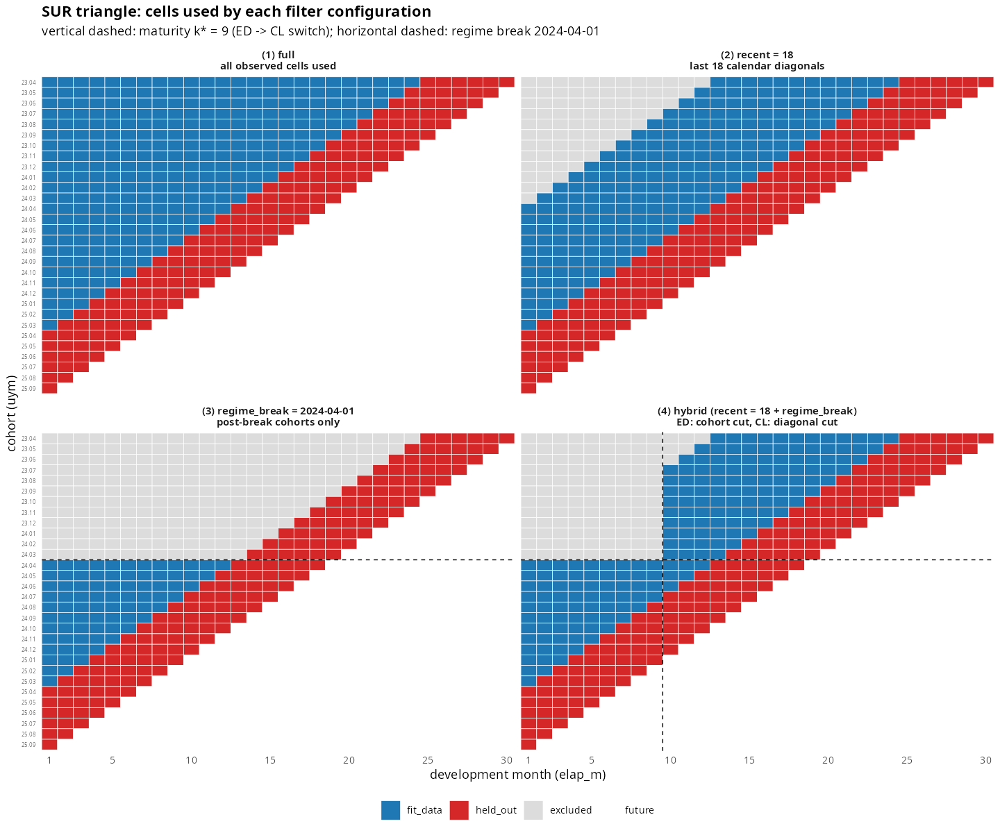

영어 원본 보기: Hybrid filtering via regime break
1. 동기
장기 건강보험 포트폴리오에서 요율 인상, 보장 구조 변경, 인수
가이드라인 개정 같은 사건이 발생하면 특정 시점 이후의 코호트는 이전
코호트와 다른 손해율 양상을 보인다. 이때 chain ladder 가 전체 데이터에
단순히 적합되면 오래된 코호트의 link factor 가 최근 코호트의 추정에
그대로 흘러들어가, 백테스트의 diag_summary 에서 대각선을
가로지르는 단조 표류 (drift) 로 드러난다.
이 표류를 누르는 한 가지 도구가 recent = N 인자다. 최근
N 개의 대각선만 사용해 link factor 를 다시 계산한다. 그러나
recent 단독은 한계가 있다. 대각선 단위 컷은 초기 dev
영역까지 흘러들어가, 사용자가 보기에는 “이미 충분히 안정된 초기 dev 의
ED 영역” 까지 좁은 창으로만 보게 만든다.
사용자의 자연스러운 직관은 두 영역을 비대칭적으로 다루는 것이다.
- 성숙점(maturity point) 이전의 ED 영역: 코호트 단위 수평 컷 (post-break 코호트만 사용).
- 성숙점 이후의 CL 영역: 대각선 단위 컷 (
recent).
regime_break 인자는 이 직관을 그대로 구현한다.
2. 두 축의 비대칭성
| 축 | 변화 횟수 | 패키지 자료원 |
|---|---|---|
| x (maturity, ED → CL) | 그룹당 정확히 1회 | fit_ata$maturity |
| y (regime break) | 그룹당 0~여러 번 | detect_cohort_regime$breakpoints |
x 축은 모형 단계의 단일 switch 이며 find_ata_maturity()
가 한 점
()
을 반환한다. y 축은 외생적 사건이라 그룹 안에서 0 회일 수도, 여러 번일
수도 있다. regime_break 가 다중 값을 받을 때는 가장 최신
break 만 쓴다 — break 이후 누적된 코호트 수가 많을수록 post-break
통계량이 안정적이기 때문이다.
3. API
regime_break 는 fit_ata,
fit_ed, fit_lr 의 공통 인자이며 다음 네 가지
입력을 받는다.
| 입력 | 동작 |
|---|---|
NULL (default) |
필터링 없음 — 기존 동작과 동일 |
Date 또는 문자열 |
단일 break date |
| Date/문자열 벡터 | 가장 최신 값 자동 선택 |
CohortRegime 객체 |
detect_cohort_regime() 결과를 직접 전달 |
library(lossratio)
data(experience)
exp <- as_experience(experience)
tri_sur <- build_triangle(exp[cv_nm == "SUR"], cv_nm)
# 단일 break date — 24.04 이후 코호트만 사용
fit_lr(tri_sur, method = "sa", recent = 18L,
regime_break = "2024-04-01")
# CohortRegime 객체 직접 전달
reg <- detect_cohort_regime(tri_sur)
fit_lr(tri_sur, method = "sa", recent = 18L, regime_break = reg)
# 다중 break — 자동으로 최신 사용 (= 24.04)
fit_lr(tri_sur, method = "sa",
regime_break = c("2023-06-01", "2024-04-01"))fit_ata, fit_ed 도 같은 인자 시그니처를
따른다. 단순 모드 (fit_ata, fit_ed, 또는
fit_lr(method ∈ {"ed","cl"})) 에서는 break 이전 코호트를
일괄 제거한 단일 cohort cut 으로 동작한다.
4. SA mode 의 hybrid 동작
fit_lr(method = "sa") + regime_break +
recent 조합에서만 두 축의 컷이 동시에 적용된다.
- dev ≤ — ED 영역: post-break 코호트만 사용 (cohort cut)
- dev >
— CL 영역: 최근
recent개 대각선만 사용 (calendar cut),recent = NULL이면 전체 사용
성숙점 자체는 break 컷에 의해 영향을 받지 않도록 2-pass 검출 로 추정한다.
- 1차 pass: 필터링 없는 raw triangle 으로
find_ata_maturity()호출 → 추정. break 이전·이후 코호트 모두 ATA 패턴에 기여하므로 는 안정적이다. - 2차 pass: 1차에서 얻은
를 고정한 채 hybrid 필터를 적용해 본 적합 (
fit_ata,fit_ed, projection) 수행.
이렇게 분리하면, post-break window 가 짧은 그룹에서도 가 link factor noise 에 따라 흔들리지 않는다.
각 필터 설정이 어떤 셀을 fit_lr 에 공급하는지는
plot_triangle(type = "usage") 로 시각화할 수 있다.
plot_triangle(tri_sur, type = "usage", holdout = 6L) # full
plot_triangle(tri_sur, type = "usage", recent = 12L, holdout = 6L) # recent
plot_triangle(tri_sur, type = "usage", regime_break = "2024-04-01", holdout = 6L) # break
plot_triangle(tri_sur, type = "usage", recent = 12L,
regime_break = "2024-04-01", holdout = 6L) # hybrid
hybrid 패널은 SA 모드가 적용하는 dev-축 split — ED 쪽은 cohort cut, CL 쪽은 calendar 대각선 cut 이 에서 만나는 사다리꼴 합집합 — 을 그대로 시각화한다.
5. 케이스 스터디 — SUR 그룹
내부 experience 데이터셋의 SUR 보장은 24.04 에 합성
regime break 가 삽입되어 있다. 동일 triangle 에 네 가지 변종으로
backtest 를 돌리고 결과를 비교한다.
tri_sur <- build_triangle(exp[cv_nm == "SUR"], cv_nm)
reg <- detect_cohort_regime(tri_sur)
bt_full <- backtest(tri_sur, holdout = 6L)
bt_recent <- backtest(tri_sur, holdout = 6L, recent = 18L)
bt_break <- backtest(tri_sur, holdout = 6L,
regime_break = reg)
bt_hybrid <- backtest(tri_sur, holdout = 6L, recent = 18L,
regime_break = reg)내부 분석 스크립트 (dev/regime_backtest_hybrid.R) 의
결과는 다음과 같다.
| 변종 | drift (cal30 − cal25) | overall mean |
|---|---|---|
| full | +4.50pp | -1.25% |
| recent = 18 | +2.03pp | -3.45% |
| regime_break + recent = 18 | -0.69pp | +0.03% |
두 컬럼은 hold-out 대각선들에서 측정한 AEG =
actual / pred − 1 (양수 = 과소예측) 을 두 가지 관점으로
요약한 값이다.
- drift (cal30 − cal25): 대각선별로 평균낸 AEG 의 (가장 최근 − 가장 오래된) 차이. hold-out 기간 동안 예측 오차가 단조롭게 변하는지 — 즉 정적 모형이 흡수하지 못한 regime 변화의 시그니처 — 를 포착한다.
- overall mean: hold-out 셀 전체의 셀단위 AEG 평균 — 모형의 방향성 편향.
drift 가 full 의 +4.50pp 에서 hybrid 의 -0.69pp 로 거의
0 에 수렴하고 overall mean 도 편향이 사라진다. hybrid 모드는 ED 영역
(dev ≤ k*) 에서 cohort cut, CL 영역 (dev > k*) 에서 calendar 대각선
cut 의 두 axis 컷을
에서 이어붙여 적용한다.
데이터 사용 영역의 시각적 비교는 위 4-panel 그림 참조. full 은 모든 셀, recent 는 최근 평행사변형 밴드, hybrid 는 좌하단의 post-break 사다리꼴 + 우상단의 최근 평행사변형 밴드라는 두 영역의 합집합으로 나타난다.
6. 다중 그룹 처리
detect_cohort_regime() 은 단일 그룹 triangle 을
전제한다. 여러 cv_nm 그룹이 있는 portfolio 에서는 그룹별로
별도 호출한다.
groups <- unique(exp$cv_nm)
fits <- lapply(groups, function(g) {
tri_g <- build_triangle(exp[cv_nm == g], cv_nm)
reg_g <- detect_cohort_regime(tri_g)
fit_lr(tri_g, method = "sa", recent = 18L,
regime_break = reg_g)
})
names(fits) <- groups향후
regime_break = list(SUR = "2024-04-01", CAN = "2023-12-01")
같은 named list 입력을 지원할 수 있으나, 현재는
scalar/vector/CohortRegime 세 형태만 동작한다.
7. 한계와 대안
post-break window 가 너무 짧으면 (n_post 가 작으면) ED
강도
나 link factor
가 noisy 해진다. 실용적 임계는 n_post ≳ 6 정도이며, 이보다
작으면 다음 두 대안 중 하나를 권장한다.
- regime_break 적용 없이
recent만 사용해 calendar-side 표류만 누른다. - 향후 도입 예정인 credibility weighting 으로 pre-break 코호트의 link factor 에 부분 가중을 부여한다 (TODO).
또한 regime_break 는 link factor 추정 단계에서만
작동하며, 추정이 끝난 뒤에는 모든 코호트가 같은 link factor 를 공유한다.
break 이전 코호트의 ultimate 추정도 post-break 데이터로 전이되므로,
사용자는 이 점을 인지하고 결과를 해석할 필요가 있다.
8. 같이 보기
-
fit_lr— 손해율 추정 통합 인터페이스. -
백테스트 문서 —
recent,regime_break가 결과에 미치는 영향을 진단하는 도구. -
detect_cohort_regime— 코호트 단위 break date 자동 검출.